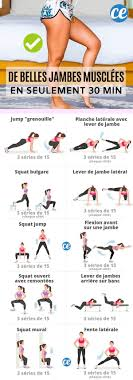
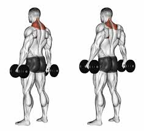
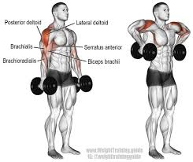

Welcome to my site
muscler les jambes
Les exercices pour muscler les quadriceps
-
Le squat. Placez vos pieds de façon naturelle, à la largeur
d'épaules. ...
- Le leg extension. ...
- La presse oblique. ...

muscler le dos
Les exercices pour muscler le grand dorsal
- Les tirages verticaux à la poulie haute. ...
- Le rowing barre buste penché ...
- Le bûcheron. ...

muscler l'epaule
les exercices pour muscler l'avant de l'épaule
-
Les élévations frontales aux haltères, à la poulie basse, aux
élastiques ou à la barre. ..
- Le développé Arnold aux haltères. ...
- Les birds aux haltères face au banc incliné ...
